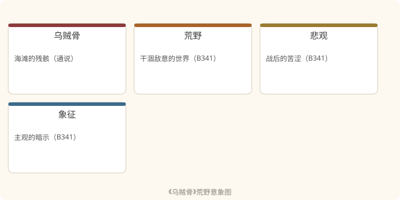

乌贼骨
一、基本信息
| 作者 | 埃乌杰尼奥·蒙塔莱 |
|---|---|
| 成书/出版 | 1925年（Britannica B341：Ossi di seppia (1925; Cuttlefish Bones)） Eugenio Montale — Encyclopaedia Britannica（百科全书） |
| 国别/地区 | 意大利 |
| 时代 | 现当代 · 20世纪20年代 |
| 体裁 | 诗集 |
| 语言 | 意大利语 |

《乌贼骨》荒野意象图（主题·结构图）
二、创作背景
Britannica（B341）：Ossi di seppia——'expressed the bitter pessimism of the postwar period'（表达了战后年代的苦涩悲观）。
Britannica（B341）：'A tragic vision of the world as a dry, barren, hostile wilderness'——把世界视为干涸、荒芜、充满敌意的荒野的悲剧性视野。
Britannica（B341）：蒙塔莱属隐逸派传统——'emotional suggestiveness of words and a symbolism of purely subjective meaning'。
三、内容脉络
利古里亚海岸的'干石'意象群：荒凉之地与'墙缝里的光'（意象通说待核——B341未载具体篇目）。
'苦涩悲观'的抒情化：个人声音对抗公共语言（B341 语境）。
四、主要人物表
| 人物 | 身份 | 说明 |
|---|---|---|
| 抒情'我' | 旁观者/幸存者 | （通说待核） |
五、主题与艺术特点
- 战后苦涩悲观（B341：bitter pessimism of the postwar period）。
- 世界即荒野的悲剧视野（B341）。
- 隐逸派：主观象征与词的暗示力（B341：Hermeticism）。
六、影响与评论
- Britannica：蒙塔莱1975年诺奖（B341）。
Eugenio Montale — Encyclopaedia Britannica（百科全书） - Britannica：'progressively more introverted and obscure'——其后来诗风的起点（B341）。
Eugenio Montale — Encyclopaedia Britannica（百科全书）
七、阅读建议
难点
- 隐逸派的晦涩。
- 利古里亚海岸地名（莱里奇等——通说待核）。
- 《乌贼骨》中译本（人民文学/译林等——通说待核）。
- 意大利文原版。
蒙塔莱首选；后接《境遇》(1939)。
八、待核实
- 具体篇目（《常常身处 mechanical》等）核对——B341未载。
- '干石/墙缝'意象细节待核。
- 1925年出版（Pier Angelo Soldini序说）待核。
本页主要来源
埃乌杰尼奥·蒙塔莱的其他收录作品：乌贼骨